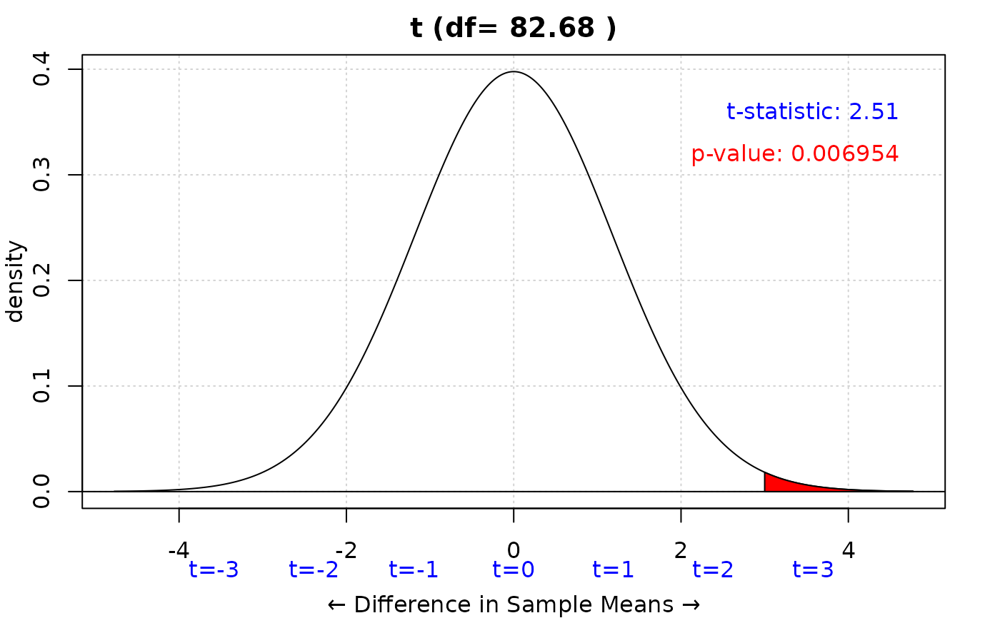
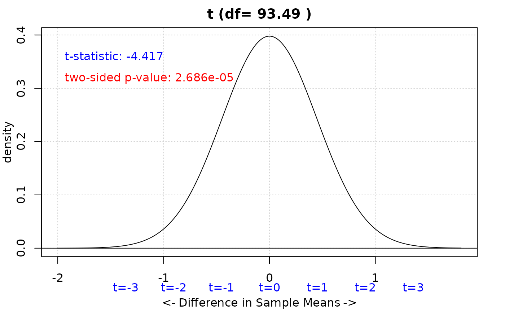
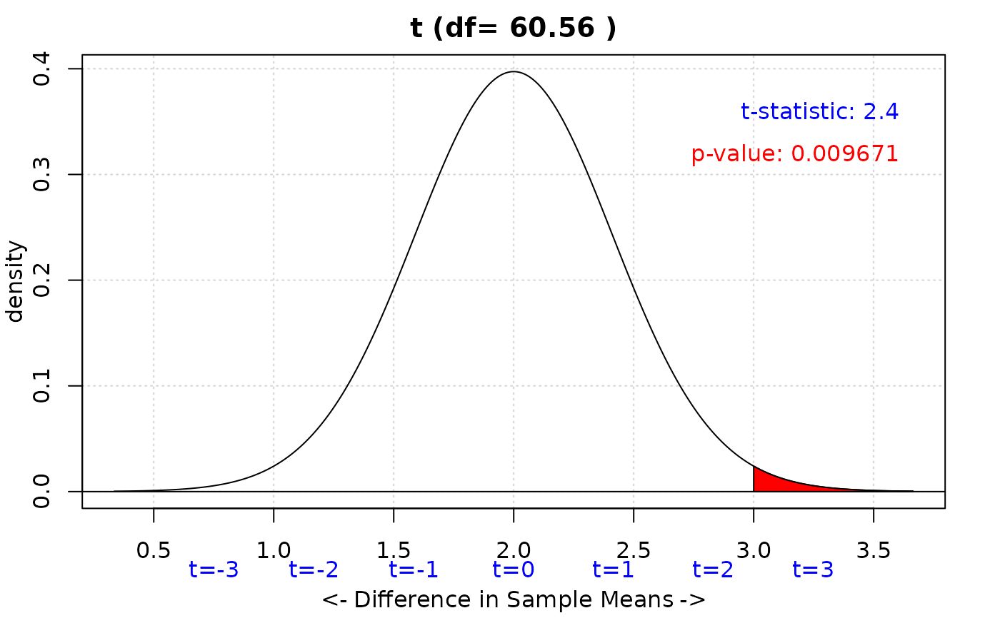
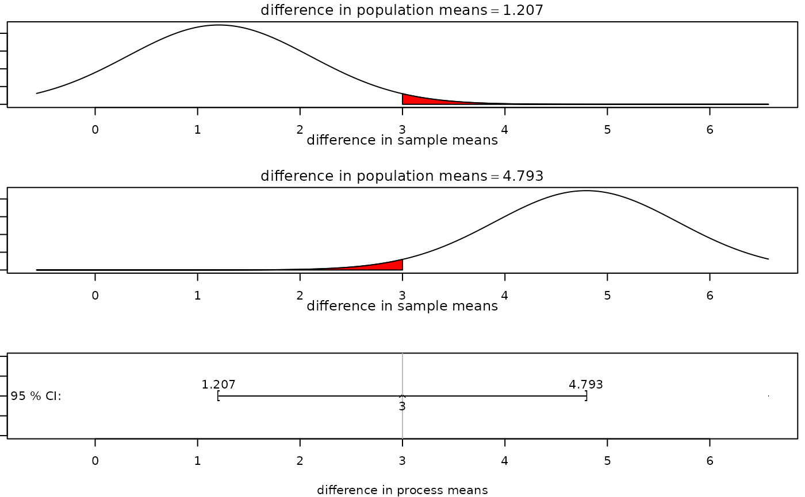

Two Sample T-Test
iscamtwosamplet.Rdtwosamplet calculates a two sample t-test and/or interval from summary data.
It defaults to a hypothesized population mean difference of 0. You can
optionally set an alternative hypothesis and confidence level for a two-sided
confidence interval.
Usage
iscamtwosamplet(
x1,
sd1,
n1,
x2,
sd2,
n2,
hypothesized = 0,
alternative = NULL,
conf.level = 0
)Arguments
- x1
Observed mean for group 1.
- sd1
Observed standard deviation for group 1.
- n1
Sample size for group 1.
- x2
Observed mean for group 2.
- sd2
Observed standard deviation for group 2.
- n2
Sample size for group 2.
- hypothesized
Hypothesized difference in population means.
- alternative
"less", "greater", or "two.sided"
- conf.level
Confidence level.
Examples
iscamtwosamplet(
x1 = 25,
sd1 = 5,
n1 = 40,
x2 = 22,
sd2 = 6,
n2 = 45,
alternative = "greater"
)
#>
#> Two Sample t test
#>
#> Group1: mean = 25, sd = 5, sample size = 40
#> Group2: mean = 22, sd = 6, sample size = 45
#> diff:3
#>
#> Null hypothesis : mu1-mu2 = 0
#> Alternative hypothesis: mu1-mu2 > 0
#> t-statistic: 2.513
#> df: 82.68

#> p-value: 0.006954
iscamtwosamplet(
x1 = 10,
sd1 = 2,
n1 = 50,
x2 = 12,
sd2 = 2.5,
n2 = 50,
alternative = "two.sided"
)
#>
#> Two Sample t test
#>
#> Group1: mean = 10, sd = 2, sample size = 50
#> Group2: mean = 12, sd = 2.5, sample size = 50
#> diff:-2
#>
#> Null hypothesis : mu1-mu2 = 0
#> Alternative hypothesis: mu1-mu2 <> 0
#> t-statistic: -4.417
#> df: 93.49

#> p-value: 2.686e-05
iscamtwosamplet(
x1 = 8,
sd1 = 1.5,
n1 = 30,
x2 = 5,
sd2 = 1.8,
n2 = 33,
alternative = "greater",
hypothesized = 2
)
#>
#> Two Sample t test
#>
#> Group1: mean = 8, sd = 1.5, sample size = 30
#> Group2: mean = 5, sd = 1.8, sample size = 33
#> diff:3
#>
#> Null hypothesis : mu1-mu2 = 2
#> Alternative hypothesis: mu1-mu2 > 2
#> t-statistic: 2.403
#> df: 60.56

#> p-value: 0.009671
iscamtwosamplet(
x1 = 15,
sd1 = 3,
n1 = 25,
x2 = 12,
sd2 = 3.5,
n2 = 28,
conf.level = 0.95
)
#>
#> Two Sample t test
#>
#> Group1: mean = 15, sd = 3, sample size = 25
#> Group2: mean = 12, sd = 3.5, sample size = 28
#> diff:3
#>
#> 95 % Confidence interval for mu1-mu2: ( 1.207102 , 4.792898 )
